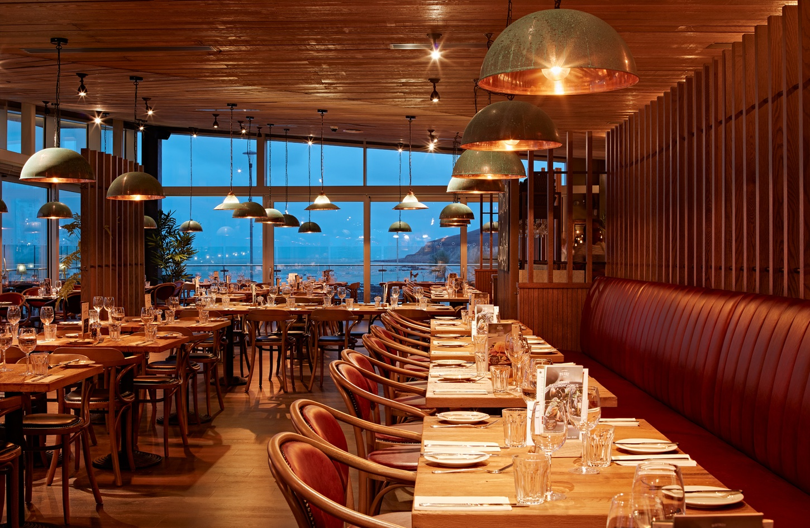
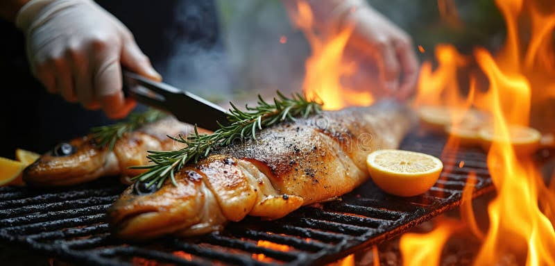

Since 2019
A small kitchen by the harbour wall
Saltmarsh began as a six-seat oyster counter in a converted net store. It now seats 46, and still opens the oysters at the counter.


Our story
Cooking what the coast gives us
Head chef Tom Ashdown grew up two streets from the harbour and spent ten years cooking in London before coming home.
The idea was simple: cook the fish that Whitstable boats already land, over a fire, without much fuss. No freezer for fish, no imported seafood, and a menu that's rewritten every morning.
The oak for the fire comes from managed woodland in the Blean, ten minutes inland. Shells go back to the oyster beds to help young oysters settle.
If it didn't come out of the sea this morning, it isn't on the menu tonight. Tom Ashdown, head chef
Where it comes from
The people we cook with
Distances are measured from our kitchen door.
-
2 miles
Seasalter oyster beds
Rock and native oysters, picked by hand at low tide.
-
0.1 miles
Whitstable day boats
Plaice, bream, squid and thornback ray, landed on the harbour wall.
-
28 miles
Romney Marsh farms
Salt-marsh lamb, reared on the grazing that gives our name.
-
9 miles
Faversham orchards
Apples, pears, gooseberries and the cider in our hake sauce.
Gallery
A look inside
Select a photo to see it larger. Use the arrow keys to move between photos.